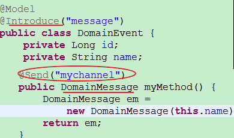
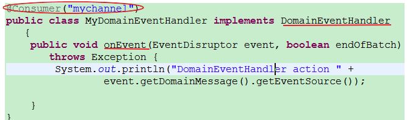
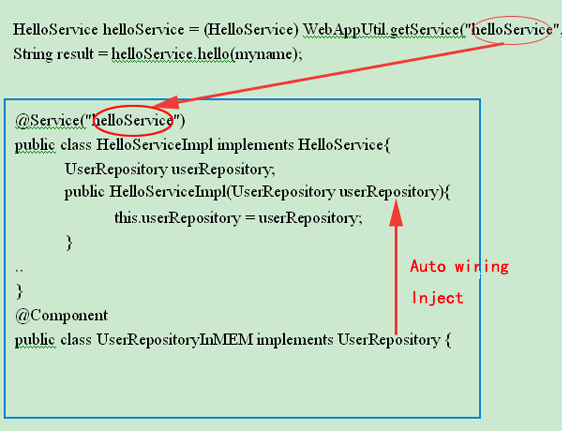

JDon.org
Quick Start
writer : banq jegg
Sample DEMO: http://www.jdon.com/testWeb/
Sample Source Download: click here(samples-simple.jar)
The first Jdon Application
Keep Domain Model in memory and enable events;
1. keep domain model in-memory cache:
@Model
public class User {
private String userId;
private String name;
....
}
A class with @Model will live in memory, default is Cache (Ehcache). Or Key-value store others.
When a domain model object with @Model is fetch from repository, we need use @Introduce(“modelCache”) to mak the object live in memory.
@Introduce(“modelCache”) must be annotated in
the interfaces that @Model objects are created or reconstructed
, the interfaces is such as repository class. DDD think repository is the transfering betwing the database data and domain object.
This step is very important for domain events

Source:
source:com.jdon.sample.test.domain.onecase.DomainEvent
2.annotate producer class with @Model and @Introduce("message")
annotate the method with @Send("mytopic") of the producer class

source:com.jdon.sample.test.domain.onecase.MyDomainEventHandler
@Introduce(“message”)："message" is the om.jdon.domain.message.MessageInterceptor configured in aspect.xml
It means introducing a MessageInterceptor for this class.
@ Send("mytopic"): "mytopic" is your topic name that equals to the "mytopic" in @Consumer("mytopic");
In this method, you must marshal your data into a DomainMessag that can be unmarshal in consumers.
3.(1) . annotate consumer class with@Consumer("mytopic");
(2). the consumer class need implement
com.jdon.domain.message.DomainEventHandler

Components
need two annotations(@Service or @Component):difference between @Service and @Component is that the @Service class must have a interface then can be called by outside client beyond jdon.
@Service("helloService")
public class HelloServiceImpl implements HelloService
..
the client in servlet or action call the service's code:
HelloService helloService = (HelloService) WebAppUtil.getService("helloService", req);
String result = helloService.hello(myname);

all source in JdonFramework/examples/testWeb
More Annotation
@Poolable: get a instance from the class's object pooing, Object Pooling - Determinism vs. Throughput
@Stateful:its instance lifecycle is user session scope
@Singleton: get a singleton instance form the class
ABC
In JdonFramework, there is a configuration XML file that named jdonframework.xml. in it, we can configure our class, the format as below:
<pojoService name="your service name " class="full class "/>
or
@Service("your service name")
"class" is the class full name, include the package; "name" can be any text that will be used in our client code.
if we have a class TestServicePOJOImp as below:
@Poolable
//@Service("testService")
public class TestServicePOJOImp implements TestService{
private JdbcDAO jdbcDao;
public TestServicePOJOImp(JdbcDAO jdbcDao) {
this.jdbcDao = jdbcDao;
}
public void createUser(EventModel em) {
....
}
}
interface TestService code:
public interface TestService {
void createUser(EventModel em);
}
|
when we finished these codes, we need create a XML file that named jdonframework.xml under project source directotry:
<?xml version="1.0" encoding="UTF-8"?>
<!DOCTYPE app PUBLIC "-//JDON//DTD Framework 2005 1.0 //EN" "http://www.jdon.com/jdonframework.dtd">
<app>
<services>
<pojoService name="testService" class="com.jdon.framework.test.service.TestServicePOJOImp"/>
</services>
</app>
|
at last, if we invoke TestServicePOJOImp in client code such as Jsp/Servlet or struts action,the invoking code as below:
TestService testService = (TestService) WebAppUtil.getService("testService ", request);
testService.createUser(em);
|
so the good point is that: if we replace TestServicePOJOImp with AnotherTestServicePOJOImp , only need modify jdonframework.xml, not need change our client codes.
thera is another big good point that Ioc or DI means Dependency Injection, maybe you have find a details about TestServicePOJOImp that it has a constructor method:
public TestServicePOJOImp(JdbcDAO jdbcDao) {
this.jdbcDao = jdbcDao;
}
if we donot create the JdbcDAO instance, how can we create TestServicePOJOImp instance?don't worry, the framework help us and it do these, but we need add a new configuration item in jdonframework.xml, as below:
<?xml version="1.0" encoding="UTF-8"?>
<!DOCTYPE app PUBLIC "-//JDON//DTD Framework 2005 1.0 //EN" "http://www.jdon.com/jdonframework.dtd">
<app>
<services>
<pojoService name="testService" class="com.jdon.framework.test.service.TestServicePOJOImp"/>
<!-- new configuration item or annotation @Component in JdbcDAO class -->
<component name="jdbcDAO" class="com.jdon.framework.test.dao.JdbcDAO"/>
</services>
</app>
|
until now, you maybe have understand JdonFramework what to do.
How starting the framework?
there are two ways to starting the framework in our web project.
first way: web.xml configuration:
<context-param>
<param-name> modelmapping-config </param-name>
<param-value> jdonframework.xml </param-value>
</context-param>
……
<listener>
<listener-class>com.jdon.container.startup.ServletContainerListener</listener-class>
</listener>
|
second way: struts-config.xml(you must know struts 1.2)
<plug-in className="com.jdon.strutsutil.InitPlugIn">
<set-property property="modelmapping-config" value="jdonframework.xml" />
</plug-in>
|
if not used in Web , can be used in java Application, see below:
Client
Client not only Servlet or Jsp or other WebFramework, but also can be a Java Application.
ContainerSetupScript css = new ContainerSetupScript();
css.prepare("com.jdon.jdonframework.xml", da);
AppUtil appUtill = new AppUtil("com.jdon.jdonframework.xml");
IServiceSample serviceSample = (IServiceSample) appUtil.getService("serviceSample");
String res = (String) serviceSample.eventPointEntry("hello");
Assert.assertEquals(res, "eventMessage=hello"); |
Source :com.jdon.SampleAppTest
Mor DEATILS
Startup the jdonframework
When using jdon framework at first time, you need to get it started in project application, since jdon’s CRUD development functions are built on struts1.2, so if you want to utilize this part of function, you need to employ InitPlugIn built in Struts to start up jdonframework.xml
At present, JDon has integrated with Struts’ presentation layer, so you can start up jdonframework.xml by using plugin in struts. The advantage of doing this is that you can implement the multi-module development with struts. A struts project may contain several function modules. Every function module is got involved in several other components from web page presentation (struts configuration and tiles configuration), module design to server side persistency. Jdon can start up jdonframework.xml by using plugin in struts to support this kind of multi-modlue development.
Configuration method 1:
Jdon framework has provided a default implementing class to plugin which is com.jdon.strutsutil.IniPlugIn, you can also implement plugin by the needs of you own. In struts-config.xml (or other struts module configuration files such as struts-config-admin.xml and so on), you can configure plugin’s implementing class:
Please see the following configuration snippet.
<plug-in className="com.jdon.strutsutil.InitPlugIn">
<set-property property="modelmapping-config" value="jdonframework.xml" />
</plug-in> |
The main purpose of InitPlugIn class is to read the modelmapping-config’s value which is the name of jdonframework configuration file defined by you.
File name could be arbitrary, for example, you can use news.jdonframework.xml to represent that jdonframework.xml is under the package news. com.jdon.app.myframework.xml is representing that myframework.xml is under the package com.jdon.app.
Usually, you can put jdonframework.xml in the web application’s class path, for example, WEB-INF/classess.
You can configure more then one jdonfremework.xml in plugin like the following:
<plug-in className="com.jdon.strutsutil.InitPlugIn">
<set-property property="modelmapping-config"
value="com.jdon.framework.test.model.models.xml,
com.jdon.framework.test.service.services.xml,
com.jdon.framework.test.dao.dao.xml" />
</plug-in> |
Also, you can set them within their struts-config.xml files respectively.
Configuration method 2
If you are not using struts, you can start up jdon framework by setting web.xml. Here is an example.
<context-param>
<param-name> modelmapping-config </param-name>
<param-value> jdonframework.xml </param-value>
</context-param>
……
<listener>
<listener-class>com.jdon.container.startup.ServletContainerListener</listener-class>
</listener>
|
Param-value in the above example could have more than one value separated by commons like the following:
<context-param> <param-name>modelmapping-config </param-name> <param-value>com.jdon.framework.test.model.models.xml, com.jdon.framework.test.service.services.xml, com.jdon.framework.test.dao.dao.xml</param-value> </context-param>
|
models.xml and services.xml dao.xml are multi configuration, sample see JiveJdon3.0
Please note, if you are not using struts, com.jdon.framework.test.model.models.xml within para-name is invalid, yet com.jdon.framework.test.service.services.xml is still valid, which is set component container that you can also regard it as components.
Interceptor configuration
when you develope a interceptor,
you need this step.
When Jon framework is starting up, it will use container.xml and aspect.xml under META-INF in jdonframework.jar by default. If you need to extend Jdon framework, for example, you have developed some small components, such as formula functions, chart components or some general functions and you need load these components as starting up, or expect them configurable and replaceable as our wish, you can integreated them into jdon. There are two ways to go. (It is not the must)
First Step :
define you own component configuration file and interceptor component configuration file, which name much be mycontainer.xml and myaspect.xml, these two files must be put in the system class path or packed in your jar file, this jar file could also be deployed together with jdon framework’s jar file
Second Step:
You can define it in web.xml in your web application, here is an example:
<context-param>
<param-name>containerConfigure</param-name>
<param-value>WEB-INF/mycontainer.xml</param-value>
</context-param>
……
<context-param>
<param-name>aspectConfigure</param-name>
<param-value>WEB-INF/myaspect.xml</param-value>
</context-param>
|
So your mycontainer.xml file and myaspect.xml file must be put in WEB_INF directory in your web application, yet file names could be arbitrary. In User-defined configuration file, corresponding settings in container.xml and aspect.xml could be overwritten; however the setting name should be the same.
Jdonframework configuration
In this article, I am going to show you how to get job done within jdonframework.xml for class testService.
We called a class instance invoked by client (Servlet/Jsp/Action) as below.
TestService testService = (TestService) WebAppUtil.getService("testService", request); |
"testService" is the class name of "TestService". it should be configured in jdonframework.xml
<pojoService name="testService" class="com.jdon.framework.test.service.TestServicePOJOImp"/>
|
There are two types of service class. One is common java class or JavaBeans, all of which called POJO. The other is EJB-regulation-complied classes which could be simply called EJB. Any of these two type class could be used as service class, hence there will be two corresponding service configurations for POJO and EJB done by pojoService and ejbService respectively.
POJOs configuration
There are two basic properties in pojoService, name and class. Property class is for putting POJO’s full name. Property Name is used to put the actual service name invoked in the program, conventionally written as similarly to the class name. Please see the source code in JdonFrameworkEJB or Ioc under Traning directory of JdonSample.
POJO Service configuration:
<pojoService name="testService" class="com.jdon.framework.test.service.TestServicePOJOImp"/>
|
Not all of classes are servered for the client directly (jsp/Servlet), that is to say some classes are not invoked by jsp/servlet or presentation frame layer, but invoked by service classes, these kinds of class we called component class annotated as component in configuration file. Note: in EJB framework, component class is managed by EJB container, so you do not need to any configuration in JdonFramework any more.
POJO Component configuration:
<component class="com.jdon.framework.test.dao.JdbcDAO" name="jdbcDAO"/>
|
We often need to define some constants and parameters in some classes, so we can do like this:
<component class="com.jdon.framework.test.dao.JdbcDAO" name="jdbcDAO">
<constructor value="java:/TestDS"/>
</ component >
|
As you can see, JdbcDao’s constructor has a string parameter. When you initialize an instance of JdbcDao, String “java:/TestDs”(DataSource JNDI Name) will be passed into constructor automatically.
By taking advantage of good point above, we can conveniently utilize xml file to define business logic. For example, we can defined the email format in jdonframework.xml so that email content could be altered easily according the customers’ needs. It is much better and flexible than get this information hard coded in the program.
Here is an example:
<component name="emailDefine"
class="com.jdon.jivejdon.service.imp.account.EmailDefine">
<constructor value="Jdon username and password"/>
<constructor value="Welcome on jdon.com. Your account has been validated. Thank you!"/>
<constructor value="Jdon.com "/>
<constructor value="Thank you, Jdon team."/>
<constructor value="admin@jdon.com"/>
</component>
|
|